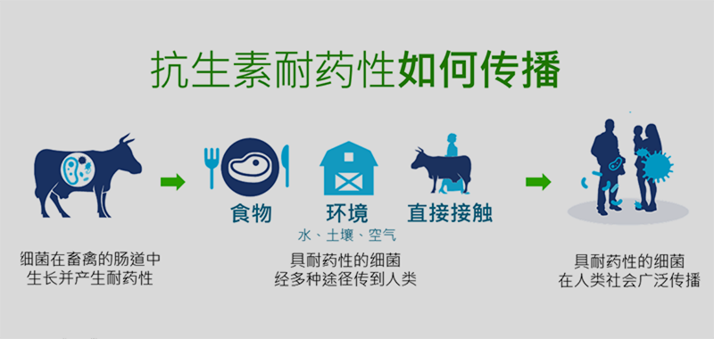
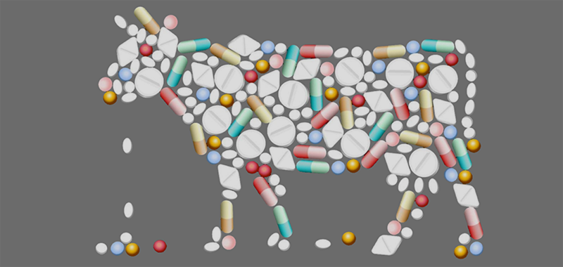

区块链与药效识别
滥用抗生素造成了超级细菌的出现，世界卫生组织警告这是全球健康的最大威胁之一。中国滥用抗生素情况尤其严重，中国科学院发布的报告显示，2013年大陆所使用的16.2万吨抗生素中，48%为人用，52%为兽用；在36种常见抗生素中，用于动物的比例则高达84.3%。

凡事超时、超量、不对症使用或未严格规范的抗生素使用行为，都属于抗生素滥用。抗生素滥用会导致抗生素耐药性的传播，从而促成超级细菌的出现。

在所有以动植物为来源的食品生产和处理步骤中严格把控相关规定，保证用于动物的抗生素仅用于控制和治疗传染病，并在兽医监督下进行。
采用区块链技术，准确无误记录药品使用时间、用量。同时依照牲畜用药后的生命体征，比对标准药效模型，精准识别用药效果。以此来大幅降低抗生素滥用比例及用药成本，同时避免用药失误造成的损失。
